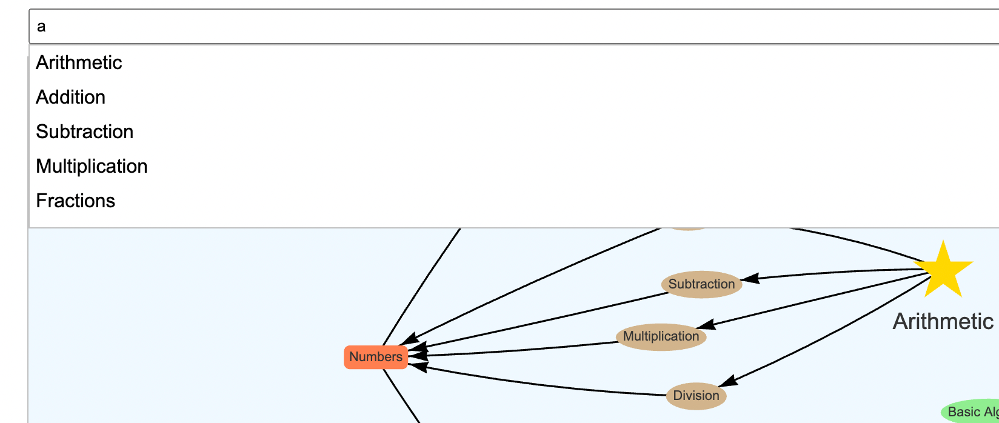

Search

Run the Search Nodes in Graph MicroSim
In this lesson we will show how you can add a search function to a graph viewer or graph editor. Finding a given node is not a problem when your concept graph is small. But as your graph gets over a few hundred nodes you need a tool to quickly get to a specific concept. By putting a few characters into a search input field you can generate a list of matching node labels and a click on an item in this list will re-center the graph on that item.
Sample GenAI Prompt
1 2 3 4 5 6 7 8 9 10 11 12 13 14 15 | |
Sample Response from ChatGPT
Sure! Below is the modified HTML code with the search feature added. The search input field is placed in the upper right corner, and as the user types, a dropdown list of matching node labels appears, narrowing down with each character. When a user selects an item from the list, the graph centers on the node and selects it.
Note
I changed the layout so that the search is on the top, not on the right. I also modified the layering so that the search dropdown list appears over the graph network so the network is not pushed down the screen.
1 2 3 4 5 6 7 8 9 10 11 12 13 14 15 16 17 18 19 20 21 22 23 24 25 26 27 28 29 30 31 32 33 34 35 36 37 38 39 40 41 42 43 44 45 46 47 48 49 50 51 52 53 54 55 56 57 58 59 60 61 62 63 64 65 66 67 68 69 70 71 72 73 74 75 76 77 78 79 80 81 82 83 84 85 86 87 88 89 90 91 92 93 94 95 96 97 98 99 100 101 102 103 104 105 106 107 108 109 110 111 112 113 114 115 116 117 118 119 120 121 122 123 124 125 126 127 128 129 130 131 132 133 134 135 136 137 138 139 140 141 142 143 144 145 146 147 148 149 150 151 152 153 154 155 156 157 158 159 160 | |
Explanation of Changes:
-
Search Input Field: Added a search input field within a
divwith the IDsearch-containerpositioned in the upper right corner using CSS. -
Dropdown List: Created a
divwith the IDsearch-resultsto display the list of matching nodes. It's styled to appear as a dropdown below the search input. -
Event Listener for Input: Added a JavaScript event listener to the search input field that filters nodes based on the user's input and displays the matching nodes in the dropdown.
-
Selecting a Node: When a user clicks on a node in the dropdown, the graph centers on that node and selects it using the
network.focusandnetwork.selectNodesmethods from vis.js. -
Closing the Dropdown: Implemented an event listener on the document to close the dropdown when the user clicks outside of the search container.
-
Styling Adjustments: Adjusted the CSS to ensure the dropdown appears correctly and is positioned relative to the search input.
Feel free to integrate this code into your application, and adjust the styles or functionality as needed!